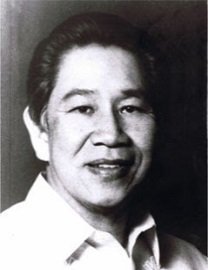
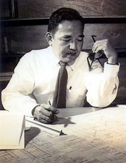
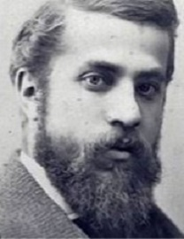
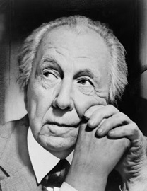
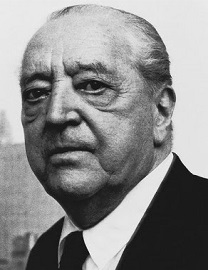
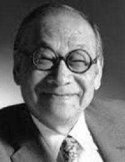
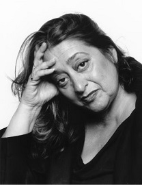
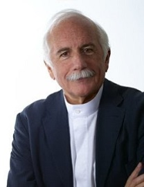
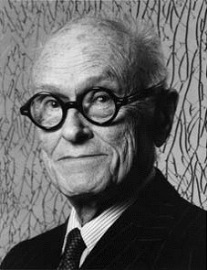
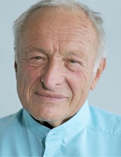

Architecture
Architecture is one of mankind's most perceptible and enduring forms of articulation, bridging the gap between the past and present. Architecture plays a very important role in our everyday lives. From the incredibly designed homes to quite essential buildings that we come across either with our own eyes or in books, architecture is a circumference which we witness daily. The visionary brains behind theses icons called buildings are actually those architects who put their heart and soul while building those pieces of excellence.
Famous Filipino Architects

Leandro Locsin
Ildefonso P. Santos

Pablo Antonio
Juan Nakpil
Carlos Santos-Viola
Famous Foreign Achitects

Antoni Gaudi

Frank Lloyd Wright

Mies Van Der Rohe

Ieoh Ming Pei

Zaha Hadid
Frank Gehry

Renzo Piano

Moshe Safdie

Philip Johnson

Richard Rogers
x
Leandro Locsin
- His most substantial contribution to Filipino architecture is the Cultural Center of the Philippines, a collection of five buildings that demonstrate the architect's drive to find a vernacular form of modernist architecture.
- The National Theatre building within the complex is a good example of Locsin's trademark style. Known as "floating volume," it consists of a two-floor-high block of travertine marble cantilevered 12 feet into the air.
- The theatre harks back to traditional Filipino dwelling huts, but on a monumentally modern scale.
Ildefonso P. Santos
- The father of Philippine landscape architecture, Ildefonso Paez Santos, or IP Santos as he was known, created some of the best-loved urban spaces in the Philippines.
- Landscape architecture, which deals with parks, plazas, and green spaces, was a little-considered element of urban planning in the first half of the 20th century.
- However, Santos changed that, carrying out pioneering work that, after four decades in the profession, led him to become National Artist for Architecture in 2006.
Pablo Antonio
- One of the first exponents of modernist architecture in the Philippines, Pablo Antonio is revered as a pioneer and the foremost architect of his time.
- He went on to revolutionize popular architecture in the Philippines, eschewing the fashionable neo-classical style for his own version of art deco.
- Antonio was acutely aware of the demands made on architecture by the unforgiving Philippine climate.
- Buildings such as the Galaxy Theatre, the Far Eastern University, and the Manila Polo Club display practical innovations such as natural ventilation systems and sunscreens, all of which are rendered in Antonio's signature style: clean lines, strong shapes, and simplicity. As Antonio's son Pablo Jr explains, "for our father, every line must have a meaning, a purpose. For him, function comes first before elegance and form."
Juan Nakpil
- The son of veterans of the Philippine Revolution, Juan Nakpil was committed to the belief that architecture built in the Philippines should reflect its culture and people.
- In his early career, Nakpil spent time studying in the United States and France, absorbing the lessons of international architecture.
- When he returned to Manila in the mid-1920s, Nakpil applied his new-found knowledge to Filipino structures.
- He worked on the restoration of the home of national hero Jose Rizal and, like Locsin, took inspiration from traditional stilt houses, remaking them in cantilevered concrete on a mammoth scale.
Carlos Santos-Viola
- He was devout Catholic throughout his life and many of his best known designs were executed for the Church of Iglesia Ni Cristo, which is owned by a Filipino Religious group.
- Santos-Viola created churches for the group all over the archipelago, designed in a style quite distinct from that of his contemporaries.
- Instead of the monumentalism of Leondro Locsin or the art deco simplicity of Pablo Antonio, Santos-Viola chose to incorporate Gothic and Baroque elements into his modern churches.
Antoni Gaudi
- The Catalin Modernist
- Gaudi spent his entire life as an architect in Barcelona, where we can witness all of his projects, the most famous of which is La Sagrada Familia Cathedral that is still under construction.
- Gaudi initially worked in the same old Victorian style, but later he developed his own style, composing his works where he would amalgamate geometric masses and would decorate the surfaces with patterned brick or stone, bright ceramic tiles and floral metalwork.
Mies Van Der Rohe
- Famous for his saying "less is more", German architect Mies Van Der Rohe disrobed all sorts of ornamentations from architecture and paved way to elemental geometric forms, commonly called as minimalism.
- He was famous for working with materials such as steel and glass which gave his buildings a skin and bone sort of a look.
Ieoh Ming Pei
- The Pragmatic Artist
- Ieoh Ming Pei is one of the most acknowledged and creative architects of our time.
- The most common characteristics of his style include rectilinear forms; light, taut plane surfaces stripped of ornamentation and decoration; open interior spaces; and a visually weightless quality reflected by the cantilever construction.
- Pei's work graces some of the most prestigious government and acclaimed site throughout the world.
Zaha Hadid
- The Deconstructivist
- Hadid was the first woman architect to win the Pritzker prize in 1994.
- She learned about abstract art and architecture at the Architectural Association in London.
- Born in Iraq, Hadid went on to win this iconic award which is often termed the "Nobel peace prize of Architecture".
- Hadid's forms are characterized as futuristic, unconventional, daring and artistic.
- Zaha Hadid and her many works, including a mobile museum for Chanel with Karl Lagerfield.
Juan Nakpil
- The son of veterans of the Philippine Revolution, Juan Nakpil was committed to the belief that architecture built in the Philippines should reflect its culture and people.
- In his early career, Nakpil spent time studying in the United States and France, absorbing the lessons of international architecture.
- When he returned to Manila in the mid-1920s, Nakpil applied his new-found knowledge to Filipino structures.
- He worked on the restoration of the home of national hero Jose Rizal and, like Locsin, took inspiration from traditional stilt houses, remaking them in cantilevered concrete on a mammoth scale.
Frank Gehry
- There is no mistaking Gehry’s work, as they are the most distinctive, and innovative architectural phenomena around.
- His deconstructive forms are iconic as tourists flock to all of his buildings worldwide to marvel at the architectural forms he creates.
- Named by Vanity Fair as “the most important architect of our age”, he has set the precedence for contemporary architecture.
- His most notable project include: The Walt Disney Concert Hall in Los Angeles, The Guggenheim Museum in Bilbao, Der Neue Zollhof in Dusseldorf and the Marques de Riscal Vineyard Hotel in Elciego.
Renzo Piano
- The Italian born architect was named one of Time magazine’s top 100 most influential people in 2008.
- Piano who is an Italian Pritzker prize-winning architect has been instrumental in shaping modern architecture that stands on its own in recognition.
- The Shard – Europe’s tallest skyscraper in London has faced much controversy in its construction, but many feel it has given London a way to join the 21st century.
- In his younger years he worked with the world-renowned architect Louis Kahn and soon become known for his unique applications of materials and details.
- Piano’s most notable project include: The newly opened Shard in London, NEMO Science Center in Amsterdam, The New York Times building in New York, and Kansai International Airport in Osaka, Japan.
Moshe Safdie
- Safdie is another product of Louis Kahn’s apprenticeship that led to his remarkable modern architecture career.
- Originally from Haifa, Safdie is known for his 1967 International & Universal Exposition – Expo 67, which was Canada’s main celebration during its centennial year, and was deemed a remarkable cultural achievement.
- Safdie has been awarded with much recognition of which the Gold Medal, from the Royal Architectural Institute of Canada is among the finest.
Philip Johnson
- Johnson's role as the founding director of MoMA’s Department of Architect had an enormous impact on the field, making him a gatekeeper who helped to shape architectural trends from 1935 onward.
- His was also a designer in his own right, though it’s fair to say that he was more of a refiner of other people’s ideas than he was an innovator.
- Nonetheless, his work achieved iconic status in a number of cases, most notably in the residence he built for himself in 1949.
Richard Rogers
- When the Pompidou Center first opened in 1977, it was consider the epitome of a trend at the time known variously as High Tech and Structural Expressionism.
- British architect Richard Rogers was a leading proponent of the style.
- This building, designed as Paris’s central institution for Modern and contemporary art, suggests a structure turning inside out, with its heating and plumbing systems worn as the facade—which also features a glass-enclosed outdoor escalator climbing the height of the building.
- Rogers took a similar approach for another of his iconic buildings, the headquarters for Lloyd’s of London.